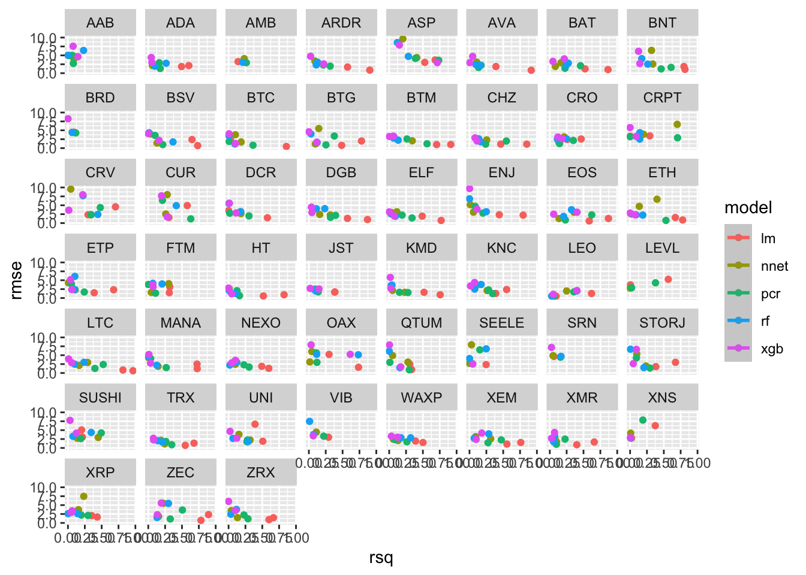
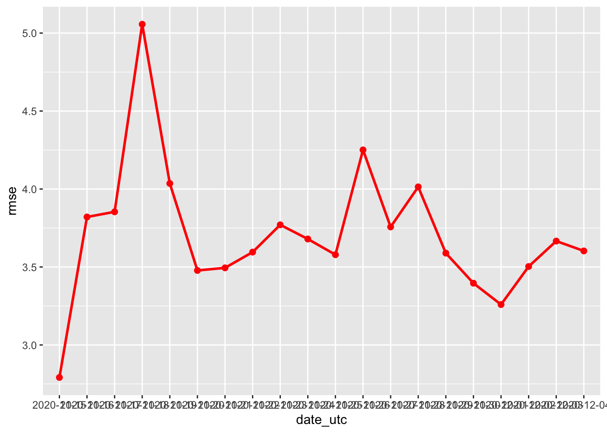
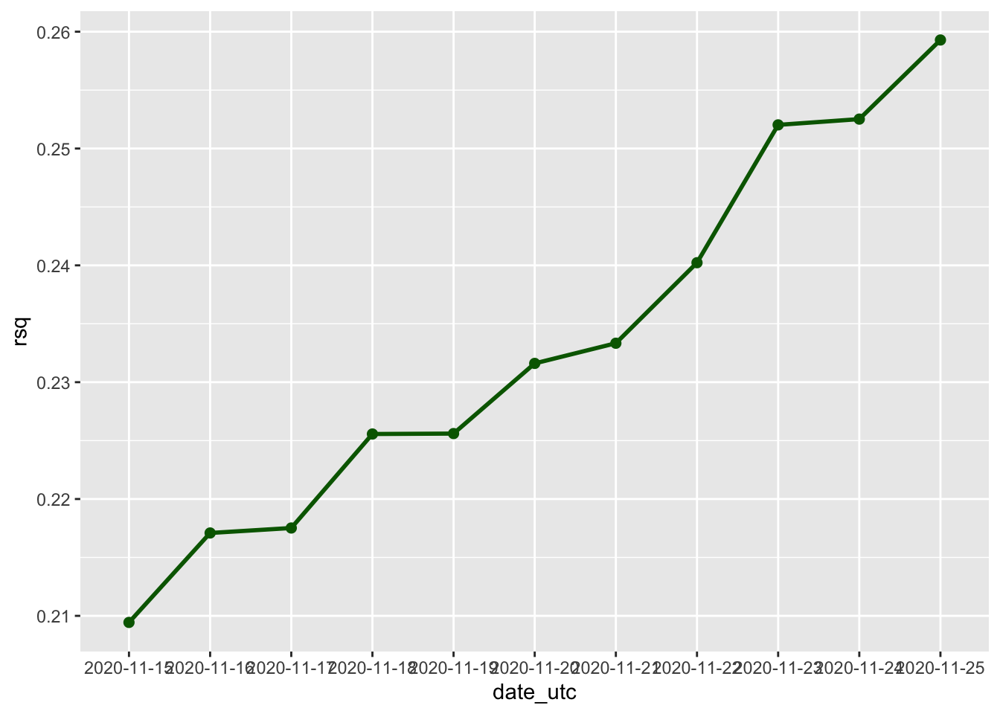

Section - 8 Evaluate Model Performance
Now we get to see the results of our hard work! There are some additional data preparation steps we need to take before we can visualize the results in aggregate; if you are just looking for the charts showing the results they are shown later on in the “Visualize Results” section below.
8.1 Summarizing models
Because we know what really happened for the target variable in the test data we used in the previous step, we can get a good idea of how good the model performed on a dataset it has never seen before. We do this to avoid overfitting, which is the idea that the model may work really well on the training data we provided, but not on the new data that we want to predictions on. If the performance on the test set is good, that is a good sign. If the data is split into several subsets and each subset has consistent results for the training and test datasets, that is an even better sign the model may perform as expected.
The first row of the data is for the EOS cryptocurrency for the split number 1. For this row of data (and all others), we made predictions for the test_data using a linear regression model and saved the results in the lm_test_predictions column. The models were trained on the train_data and had not yet seen the results from the test_data, so how accurate was the model in its predictions on this data?
8.1.1 MAE
Each individual prediction can be compared to the observation of what actually happened, and for each prediction we can calculate the error between the two. We can then take all of the values for the error of the prediction relative to the actual observations, and summarize the performance as a Mean Absolute Error (MAE) of those values, which gives us a single value to use as an indicator of the accuracy of the model. The higher the MAE score, the higher the error, meaning the model performs worse when the value is larger.
8.1.2 RMSE
A common metric to evaluate the performance of a model is the Root Mean Square Error, which is similar to the MAE but squares and then takes the square root of the values. An interesting implication of this, is that the RMSE will always be larger or equal to the MAE, where a large degree of error on a single observation would get penalized more by the RMSE. The higher the RMSE value, the worse the performance of the model, and can range from 0 to infinity, meaning there is no defined limit on the amount of error you could have (unlike the next metric).
8.1.3 R Squared
The \(R^2\), also known as the coefficient of determination, is a measure that describes the strength in the correlation between the predictions made and the actual results. A value of 1.0 would mean that the predictions made were exactly identical to the actual results. A perfect score is usually concerning because even a great model shouldn’t be exactly 100% accurate and usually indicates a mistake was made that gave away the results to the model and would not perform nearly as good when put into practice in the real world, but in the case of the \(R^2\) the higher the score (from 0 to 1) the better.
8.1.4 Get Metrics
We can return the RMSE and \(R^2\) metrics for the EOS cryptocurrency and the split number 1 by using the postResample() function from the caret package:
postResample(pred = cryptodata_nested$lm_test_predictions[[1]],
obs = cryptodata_nested$test_data[[1]]$target_price_24h)## RMSE Rsquared MAE
## 0.04159625 0.04097602 0.03219727We can extract the first element to return the RMSE metric, and the second element for the R Squared (R^2) metric. We are using [[1]] to extract the first element of the lm_test_predictions and test_data and compare the predictions to the actual value of the target_price24h column.
This model used the earliest subset of the data available for the cryptocurrency. How does the same model used to predict this older subset of the data perform when applied to the most recent subset of the data from the holdout?
We can get the same summary of results comparing the lm_holdout_predictions to what actually happened to the target_price_24h column of the actual holdout_data:
postResample(pred = cryptodata_nested$lm_holdout_predictions[[1]],
obs = cryptodata_nested$holdout_data[[1]]$target_price_24h)## RMSE Rsquared MAE
## NA 0.2725032 NAThe result above may show a value of NA for the RMSE metric. We will explain and resolve the issue later on.
8.1.5 Comparing Metrics
Why not just pick one metric and stick to it? We certainly could, but these two metrics complement each other. For example, if we had a model that always predicts a 0% price change for the time period, the model may have a low error but it wouldn’t actually be very informative in the direction or magnitude of those movements and the predictions and actuals would not be very correlated with each other which would lead to a low \(R^2\) value. We are using both because it helps paint a more complete picture in this sense, and depending on the task you may want to use a different set of metrics to evaluate the performance. It is also worth mentioning that if your target variable you are predicting is either 0 or 1, this would be a classification problem where different metrics become more appropriate to use.
These are indicators that should be taken with a grain of salt individually, but comparing the results across many different models for the same cryptocurrency can help us determine which models work best for the problem, and then comparing those results across many cryptocurrencies can help us understand which cryptocurrencies we can predict with the most accuracy.
Before we can draw these comparisons however, we will need to “standardize” the values to create a fair comparison across all dataasets.
8.2 Data Prep - Adjust Prices
Because cryptocurrencies can vary dramatically in their prices with some trading in the tens of thousands of dollars and others trading for less than a cent, we need to make sure to standardize the RMSE columns to provide a fair comparison for the metric.
Therefore, before using the postResample() function, let’s convert both the predictions and the target to be the % change in price over the 24 hour period, rather than the change in price ($).
8.2.1 Add Last Price
In order to convert the first prediction made to be a percentage, we need to know the previous price, which would be the last observation from the train data. Therefore, let’s make a function to add the last_price_train column and append it to the predictions made so we can calculate the % change of the first element relative to the last observation in the train data, before later removing the value not associated with the predictions:
last_train_price <- function(train_data, predictions){
c(tail(train_data$price_usd,1), predictions)
}We will first perform all steps on the linear regression models to make the code a little more digestible, and we will then perform the same steps for the rest of the models.
8.2.1.1 Test
Overwrite the old predictions for the first 4 splits of the test data using the new function created above:
cryptodata_nested <- mutate(cryptodata_nested,
lm_test_predictions = ifelse(split < 5,
map2(train_data, lm_test_predictions, last_train_price),
NA))The mutate() function is used to create the new column lm_test_predictions assigning the value only for the first 4 splits where the test data would actually exist (the 5th being the holdout set) using the ifelse() function.
8.2.1.2 Holdout
Do the same but for the holdout now. For the holdout we need to take the last price point of the 5th split:
cryptodata_nested_holdout <- mutate(filter(cryptodata_nested, split == 5),
lm_holdout_predictions = map2(train_data, lm_holdout_predictions, last_train_price))Now join the holdout data to all rows based on the cryptocurrency symbol alone:
cryptodata_nested <- left_join(cryptodata_nested,
select(cryptodata_nested_holdout, symbol, lm_holdout_predictions),
by='symbol')
# Remove unwanted columns
cryptodata_nested <- select(cryptodata_nested, -lm_holdout_predictions.x, -split.y)
# Rename the columns kept
cryptodata_nested <- rename(cryptodata_nested,
lm_holdout_predictions = 'lm_holdout_predictions.y',
split = 'split.x')
# Reset the correct grouping structure
cryptodata_nested <- group_by(cryptodata_nested, symbol, split)8.2.2 Convert to Percentage Change
Now we have everything we need to accurately calculate the percentage change between observations including the first one. Let’s make a new function to calculate the percentage change:
standardize_perc_change <- function(predictions){
results <- (diff(c(lag(predictions, 1), predictions)) / lag(predictions, 1))*100
# Exclude the first element, next element will be % change of first prediction
tail(head(results, length(predictions)), length(predictions)-1)
}Overwrite the old predictions with the new predictions adjusted as a percentage now:
8.2.3 Actuals
Now do the same thing to the actual prices. Let’s make a new column called actuals containing the real price values (rather than the predicted ones):
actuals_create <- function(train_data, test_data){
c(tail(train_data$price_usd,1), as.numeric(unlist(select(test_data, price_usd))))
}Use the new function to create the new column actuals:
cryptodata_nested <- mutate(cryptodata_nested,
actuals_test = ifelse(split < 5,
map2(train_data, test_data, actuals_create),
NA))8.2.3.1 Holdout
Again, for the holdout we need the price from the training data of the 5th split to perform the first calculation:
cryptodata_nested_holdout <- mutate(filter(cryptodata_nested, split == 5),
actuals_holdout = map2(train_data, holdout_data, actuals_create))Join the holdout data to all rows based on the cryptocurrency symbol alone:
cryptodata_nested <- left_join(cryptodata_nested,
select(cryptodata_nested_holdout, symbol, actuals_holdout),
by='symbol')
# Remove unwanted columns
cryptodata_nested <- select(cryptodata_nested, -split.y)
# Rename the columns kept
cryptodata_nested <- rename(cryptodata_nested, split = 'split.x')
# Reset the correct grouping structure
cryptodata_nested <- group_by(cryptodata_nested, symbol, split)8.2.4 Actuals as % Change
Now we can convert the new actuals to express the price_usd as a % change relative to the previous value using adapting the function from earlier:
8.3 Review Summary Statistics
Now that we standardized the price to show the percentage change relative to the previous period instead of the price in dollars, we can actually compare the summary statistics across all cryptocurrencies and have it be a fair comparison.
Let’s get the same statistic as we did at the beginning of this section, but this time on the standardized values. This time to calculate the RMSE error metric let’s use the rmse() function from the hydroGOF package because it allows us to set the na.rm = T parameter, and otherwise one NA value would return NA for the overall RMSE:
hydroGOF::rmse(cryptodata_nested$lm_test_predictions[[1]],
cryptodata_nested$actuals_test[[1]],
na.rm=T)## [1] 0.48302178.3.1 Calculate R^2
Now we can do the same for the R Squared metric using the same postResample() function that we used at the start of this section:
evaluate_preds_rsq <- function(predictions, actuals){
postResample(pred = predictions, obs = actuals)[[2]]
}cryptodata_nested <- mutate(cryptodata_nested,
lm_rsq_test = unlist(ifelse(split < 5,
map2(lm_test_predictions, actuals_test, evaluate_preds_rsq),
NA)),
lm_rsq_holdout = unlist(map2(lm_holdout_predictions, actuals_holdout, evaluate_preds_rsq)))Look at the results:
## # A tibble: 220 x 4
## # Groups: symbol, split [220]
## symbol split lm_rsq_test lm_rsq_holdout
## <chr> <dbl> <dbl> <dbl>
## 1 EOS 1 0.00254 0.390
## 2 BCH 1 0.0879 0.000383
## 3 NEO 1 0.774 0.0550
## 4 BTG 1 1 0.624
## 5 BRD 1 0.670 0.192
## 6 DGB 1 0.804 0.687
## 7 LTC 1 0.460 0.931
## 8 NUT 1 0.476 0.0000845
## 9 NEXO 1 0.746 0.851
## 10 XMR 1 0.806 0.823
## # … with 210 more rows8.3.2 Calculate RMSE
Similarly let’s make a function to get the RMSE metric for all models:
evaluate_preds_rmse <- function(predictions, actuals){
hydroGOF::rmse(predictions, actuals, na.rm=T)
}Now we can use the map2() function to use it to get the RMSE metric for both the test data and the holdout:
cryptodata_nested <- mutate(cryptodata_nested,
lm_rmse_test = unlist(ifelse(split < 5,
map2(lm_test_predictions, actuals_test, evaluate_preds_rmse),
NA)),
lm_rmse_holdout = unlist(map2(lm_holdout_predictions, actuals_holdout, evaluate_preds_rmse)))Look at the results. Wrapping them in print(n=500) overwrites the behavior to only give a preview of the data so we can view the full results (up to 500 observations).
## # A tibble: 220 x 6
## # Groups: symbol, split [220]
## symbol split lm_rmse_test lm_rmse_holdout lm_rsq_test lm_rsq_holdout
## <chr> <dbl> <dbl> <dbl> <dbl> <dbl>
## 1 EOS 1 0.483 1.83 0.00254 0.390
## 2 BCH 1 1.21 2.88 0.0879 0.000383
## 3 NEO 1 4.81 1.88 0.774 0.0550
## 4 BTG 1 0.154 1.10 1 0.624
## 5 BRD 1 1.50 6.90 0.670 0.192
## 6 DGB 1 0.746 2.42 0.804 0.687
## 7 LTC 1 0.548 0.741 0.460 0.931
## 8 NUT 1 1.26 0.671 0.476 0.0000845
## 9 NEXO 1 0.666 0.746 0.746 0.851
## 10 XMR 1 0.672 0.505 0.806 0.823
## 11 VIB 1 5.98 8.32 NA 0.341
## 12 XNS 1 5.51 5.45 0.679 0.541
## 13 BTM 1 2.13 1.41 0.160 0.595
## 14 BTC 1 0.338 0.498 0.297 0.928
## 15 BAT 1 1.02 0.907 0.292 0.596
## 16 DCR 1 0.338 1.04 0.696 0.841
## 17 XRP 1 0.681 1.31 0.108 0.606
## 18 ENJ 1 3.14 1.97 0.0958 0.245
## 19 XEM 1 4.31 1.44 0.184 0.592
## 20 HT 1 0.200 0.726 0.687 0.536
## 21 ETH 1 1.90 0.722 0.334 0.921
## 22 ZEC 1 0.605 1.14 0.367 0.658
## 23 BNT 1 1.60 0.348 0.290 0.953
## 24 MANA 1 1.25 1.34 0.307 0.421
## 25 OAX 1 9.09 1.25 0.517 0.269
## 26 ZRX 1 0.831 1.01 0.592 0.758
## 27 AMB 1 5.40 26.9 0.0916 0.629
## 28 TRX 1 0.368 1.01 0.698 0.731
## 29 BSV 1 0.583 0.815 0.815 0.626
## 30 ETP 1 2.11 3.37 0.437 0.115
## 31 CRO 1 0.237 1.23 0.997 0.379
## 32 ELF 1 0.839 1.14 0.897 0.817
## 33 NEO 2 4.79 1.88 0.446 0.0550
## 34 BCH 2 0.651 2.88 0.195 0.000383
## 35 AMB 2 23.6 26.9 0.131 0.629
## 36 NUT 2 0.500 0.671 NA 0.0000845
## 37 CHZ 1 0.753 1.96 0.399 0.654
## 38 ADA 1 1.37 1.65 0.173 0.206
## 39 ARDR 1 1.26 1.03 0.725 0.770
## 40 WAXP 1 0.492 2.95 0.272 0.740
## 41 KNC 1 0.745 1.80 0.739 0.188
## 42 KMD 1 1.51 0.821 0.247 0.459
## 43 SEELE 1 12.6 1.94 0.333 0.957
## 44 AVA 1 0.798 0.895 0.411 0.516
## 45 CRPT 1 1.53 3.36 0.361 0.00152
## 46 VIB 2 4.09 8.32 0.894 0.341
## 47 BTM 2 0.897 1.41 0.451 0.595
## 48 EOS 2 0.270 1.83 0.958 0.390
## 49 TRX 2 1.78 1.01 0.134 0.731
## 50 OAX 2 10.8 1.25 0.0701 0.269
## 51 ETP 2 1.87 3.37 0.0288 0.115
## 52 XMR 2 0.330 0.505 0.926 0.823
## 53 LTC 2 0.614 0.741 0.873 0.931
## 54 DGB 2 0.810 2.42 0.581 0.687
## 55 BTC 2 0.301 0.498 0.934 0.928
## 56 BSV 2 0.342 0.815 0.868 0.626
## 57 MANA 2 0.501 1.34 0.706 0.421
## 58 ZRX 2 0.391 1.01 0.793 0.758
## 59 BAT 2 0.895 0.907 0.411 0.596
## 60 ETH 2 1.26 0.722 0.225 0.921
## 61 HT 2 0.429 0.726 0.574 0.536
## 62 NEXO 2 1.31 0.746 0.463 0.851
## 63 ENJ 2 1.77 1.97 0.00301 0.245
## 64 BTG 2 1.56 1.10 0.335 0.624
## 65 BNT 2 3.10 0.348 0.00705 0.953
## 66 DCR 2 0.329 1.04 0.844 0.841
## 67 CRO 2 0.611 1.23 0.537 0.379
## 68 XEM 2 0.484 1.44 0.662 0.592
## 69 XRP 2 0.516 1.31 0.0106 0.606
## 70 ELF 2 0.528 1.14 0.603 0.817
## 71 NUT 3 1.16 0.671 0.00299 0.0000845
## 72 AMB 3 17.1 26.9 0.153 0.629
## 73 XRP 3 2.03 1.31 0.177 0.606
## 74 KNC 2 1.04 1.80 0.445 0.188
## 75 BRD 2 7.30 6.90 0.0101 0.192
## 76 AVA 2 3.82 0.895 0.686 0.516
## 77 XNS 2 7.70 5.45 0.850 0.541
## 78 SEELE 2 0.690 1.94 0.294 0.957
## 79 CHZ 2 0.883 1.96 0.266 0.654
## 80 ARDR 2 6.38 1.03 0.467 0.770
## 81 WAXP 2 2.31 2.95 0.419 0.740
## 82 ADA 2 0.489 1.65 0.564 0.206
## 83 KMD 2 0.899 0.821 0.345 0.459
## 84 CRPT 2 1.71 3.36 0.0144 0.00152
## 85 ZEC 2 0.501 1.14 0.967 0.658
## 86 ASP 1 2.17 3.47 0.931 0.370
## 87 VIB 3 1.82 8.32 NA 0.341
## 88 ETP 3 0.958 3.37 0.897 0.115
## 89 DGB 3 0.714 2.42 0.740 0.687
## 90 BAT 3 0.433 0.907 0.750 0.596
## 91 LTC 3 0.669 0.741 0.720 0.931
## 92 BTC 3 0.178 0.498 0.931 0.928
## 93 ZRX 3 0.546 1.01 0.732 0.758
## 94 XMR 3 0.349 0.505 0.551 0.823
## 95 NEXO 3 0.930 0.746 0.900 0.851
## 96 DCR 3 1.32 1.04 0.671 0.841
## 97 ENJ 3 2.04 1.97 0.530 0.245
## 98 BSV 3 0.254 0.815 0.780 0.626
## 99 OAX 3 3.60 1.25 0.294 0.269
## 100 MANA 3 0.575 1.34 0.871 0.421
## 101 EOS 3 0.174 1.83 0.879 0.390
## 102 TRX 3 0.120 1.01 0.970 0.731
## 103 HT 3 0.239 0.726 0.818 0.536
## 104 XEM 3 0.297 1.44 0.914 0.592
## 105 BTG 3 0.433 1.10 0.709 0.624
## 106 CRO 3 0.671 1.23 0.785 0.379
## 107 BNT 3 0.894 0.348 0.900 0.953
## 108 ETH 3 0.119 0.722 0.952 0.921
## 109 NUT 4 0 0.671 NA 0.0000845
## 110 ELF 3 0.478 1.14 0.675 0.817
## 111 BTM 3 0.456 1.41 0.627 0.595
## 112 UNI 1 9222. 2.00 0.000248 0.137
## 113 KNC 3 0.621 1.80 0.826 0.188
## 114 SEELE 3 3.05 1.94 0.722 0.957
## 115 XNS 3 6.87 5.45 0.148 0.541
## 116 CHZ 3 0.477 1.96 0.621 0.654
## 117 ARDR 3 1.66 1.03 0.312 0.770
## 118 WAXP 3 1.33 2.95 0.696 0.740
## 119 ADA 3 0.347 1.65 0.937 0.206
## 120 KMD 3 0.685 0.821 0.856 0.459
## 121 AVA 3 2.67 0.895 0.0000534 0.516
## 122 BRD 3 10.6 6.90 0.0000000305 0.192
## 123 ASP 2 3.77 3.47 0.0236 0.370
## 124 CRPT 3 1.79 3.36 NA 0.00152
## 125 ZEC 3 0.981 1.14 0.536 0.658
## 126 FTM 1 2.76 1.41 0.0238 0.310
## 127 UNI 2 2.27 2.00 0.299 0.137
## 128 ETP 4 1.13 3.37 0.649 0.115
## 129 DGB 4 0.720 2.42 0.538 0.687
## 130 BAT 4 0.617 0.907 0.582 0.596
## 131 LTC 4 0.851 0.741 0.575 0.931
## 132 BTC 4 0.379 0.498 0.598 0.928
## 133 XMR 4 0.530 0.505 0.426 0.823
## 134 ZRX 4 0.639 1.01 0.565 0.758
## 135 DCR 4 2.67 1.04 0.662 0.841
## 136 NEXO 4 1.01 0.746 0.862 0.851
## 137 BSV 4 0.551 0.815 0.911 0.626
## 138 OAX 4 3.17 1.25 0.538 0.269
## 139 ENJ 4 1.11 1.97 0.429 0.245
## 140 MANA 4 0.684 1.34 0.650 0.421
## 141 EOS 4 0.333 1.83 0.871 0.390
## 142 TRX 4 0.369 1.01 0.742 0.731
## 143 HT 4 0.303 0.726 0.832 0.536
## 144 XEM 4 1.04 1.44 0.844 0.592
## 145 BTG 4 1.01 1.10 0.226 0.624
## 146 ASP 3 2.00 3.47 0.678 0.370
## 147 BNT 4 0.426 0.348 0.776 0.953
## 148 CRO 4 0.638 1.23 0.404 0.379
## 149 ETH 4 0.383 0.722 0.832 0.921
## 150 ELF 4 0.981 1.14 0.829 0.817
## 151 BTM 4 0.855 1.41 0.791 0.595
## 152 KNC 4 0.706 1.80 0.278 0.188
## 153 SEELE 4 2.84 1.94 0.372 0.957
## 154 VIB 4 4.13 8.32 0.322 0.341
## 155 FTM 2 2.67 1.41 0.277 0.310
## 156 XNS 4 134. 5.45 0.00764 0.541
## 157 CHZ 4 0.628 1.96 0.586 0.654
## 158 ARDR 4 1.03 1.03 0.190 0.770
## 159 KMD 4 0.938 0.821 0.501 0.459
## 160 WAXP 4 0.730 2.95 0.515 0.740
## 161 ADA 4 0.991 1.65 0.661 0.206
## 162 BRD 4 1.95 6.90 0.283 0.192
## 163 AVA 4 1.43 0.895 0.177 0.516
## 164 ZEC 4 1.55 1.14 0.00200 0.658
## 165 CRPT 4 1.92 3.36 0.00981 0.00152
## 166 UNI 3 2.03 2.00 0.494 0.137
## 167 FTM 3 2.81 1.41 0.00291 0.310
## 168 ASP 4 2.26 3.47 0.0222 0.370
## 169 NEO 3 0.991 1.88 0.540 0.0550
## 170 BCH 3 1.23 2.88 0.469 0.000383
## 171 UNI 4 0.815 2.00 0.497 0.137
## 172 BTC 5 NA 0.498 NA 0.928
## 173 LTC 5 NA 0.741 NA 0.931
## 174 XMR 5 NA 0.505 NA 0.823
## 175 ZRX 5 NA 1.01 NA 0.758
## 176 DGB 5 NA 2.42 NA 0.687
## 177 BAT 5 NA 0.907 NA 0.596
## 178 DCR 5 NA 1.04 NA 0.841
## 179 NEXO 5 NA 0.746 NA 0.851
## 180 ETP 5 NA 3.37 NA 0.115
## 181 BSV 5 NA 0.815 NA 0.626
## 182 OAX 5 NA 1.25 NA 0.269
## 183 MANA 5 NA 1.34 NA 0.421
## 184 ENJ 5 NA 1.97 NA 0.245
## 185 EOS 5 NA 1.83 NA 0.390
## 186 TRX 5 NA 1.01 NA 0.731
## 187 HT 5 NA 0.726 NA 0.536
## 188 XEM 5 NA 1.44 NA 0.592
## 189 VIB 5 NA 8.32 NA 0.341
## 190 BTG 5 NA 1.10 NA 0.624
## 191 CRO 5 NA 1.23 NA 0.379
## 192 ETH 5 NA 0.722 NA 0.921
## 193 BNT 5 NA 0.348 NA 0.953
## 194 SEELE 5 NA 1.94 NA 0.957
## 195 ELF 5 NA 1.14 NA 0.817
## 196 KNC 5 NA 1.80 NA 0.188
## 197 BTM 5 NA 1.41 NA 0.595
## 198 AMB 4 44.5 26.9 0.144 0.629
## 199 FTM 4 1.02 1.41 0.461 0.310
## 200 XNS 5 NA 5.45 NA 0.541
## 201 KMD 5 NA 0.821 NA 0.459
## 202 CHZ 5 NA 1.96 NA 0.654
## 203 ARDR 5 NA 1.03 NA 0.770
## 204 WAXP 5 NA 2.95 NA 0.740
## 205 ADA 5 NA 1.65 NA 0.206
## 206 BRD 5 NA 6.90 NA 0.192
## 207 AVA 5 NA 0.895 NA 0.516
## 208 XRP 4 1.12 1.31 0.699 0.606
## 209 ZEC 5 NA 1.14 NA 0.658
## 210 NEO 4 1.09 1.88 0.0556 0.0550
## 211 BCH 4 1.47 2.88 0.129 0.000383
## 212 CRPT 5 NA 3.36 NA 0.00152
## 213 NUT 5 NA 0.671 NA 0.0000845
## 214 ASP 5 NA 3.47 NA 0.370
## 215 UNI 5 NA 2.00 NA 0.137
## 216 FTM 5 NA 1.41 NA 0.310
## 217 AMB 5 NA 26.9 NA 0.629
## 218 XRP 5 NA 1.31 NA 0.606
## 219 NEO 5 NA 1.88 NA 0.0550
## 220 BCH 5 NA 2.88 NA 0.000383Out of 220 groups, 58 had an equal or lower RMSE score for the holdout than the test set.
8.4 Adjust Prices - All Models
Let’s repeat the same steps that we outlined above for all models.
8.4.1 Add Last Price
cryptodata_nested <- mutate(cryptodata_nested,
# XGBoost:
xgb_test_predictions = ifelse(split < 5,
map2(train_data, xgb_test_predictions, last_train_price),
NA),
# Neural Network:
nnet_test_predictions = ifelse(split < 5,
map2(train_data, nnet_test_predictions, last_train_price),
NA),
# Random Forest:
rf_test_predictions = ifelse(split < 5,
map2(train_data, rf_test_predictions, last_train_price),
NA),
# PCR:
pcr_test_predictions = ifelse(split < 5,
map2(train_data, pcr_test_predictions, last_train_price),
NA))8.4.1.0.1 Holdout
cryptodata_nested_holdout <- mutate(filter(cryptodata_nested, split == 5),
# XGBoost:
xgb_holdout_predictions = map2(train_data, xgb_holdout_predictions, last_train_price),
# Neural Network:
nnet_holdout_predictions = map2(train_data, nnet_holdout_predictions, last_train_price),
# Random Forest:
rf_holdout_predictions = map2(train_data, rf_holdout_predictions, last_train_price),
# PCR:
pcr_holdout_predictions = map2(train_data, pcr_holdout_predictions, last_train_price))Join the holdout data to all rows based on the cryptocurrency symbol alone:
cryptodata_nested <- left_join(cryptodata_nested,
select(cryptodata_nested_holdout, symbol,
xgb_holdout_predictions, nnet_holdout_predictions,
rf_holdout_predictions, pcr_holdout_predictions),
by='symbol')
# Remove unwanted columns
cryptodata_nested <- select(cryptodata_nested, -xgb_holdout_predictions.x,
-nnet_holdout_predictions.x,-rf_holdout_predictions.x,
-pcr_holdout_predictions.x, -split.y)
# Rename the columns kept
cryptodata_nested <- rename(cryptodata_nested,
xgb_holdout_predictions = 'xgb_holdout_predictions.y',
nnet_holdout_predictions = 'nnet_holdout_predictions.y',
rf_holdout_predictions = 'rf_holdout_predictions.y',
pcr_holdout_predictions = 'pcr_holdout_predictions.y',
split = 'split.x')
# Reset the correct grouping structure
cryptodata_nested <- group_by(cryptodata_nested, symbol, split)8.4.2 Convert to % Change
Overwrite the old predictions with the new predictions adjusted as a percentage now:
cryptodata_nested <- mutate(cryptodata_nested,
# XGBoost:
xgb_test_predictions = ifelse(split < 5,
map(xgb_test_predictions, standardize_perc_change),
NA),
# holdout - all splits
xgb_holdout_predictions = map(xgb_holdout_predictions, standardize_perc_change),
# nnet:
nnet_test_predictions = ifelse(split < 5,
map(nnet_test_predictions, standardize_perc_change),
NA),
# holdout - all splits
nnet_holdout_predictions = map(nnet_holdout_predictions, standardize_perc_change),
# Random Forest:
rf_test_predictions = ifelse(split < 5,
map(rf_test_predictions, standardize_perc_change),
NA),
# holdout - all splits
rf_holdout_predictions = map(rf_holdout_predictions, standardize_perc_change),
# PCR:
pcr_test_predictions = ifelse(split < 5,
map(pcr_test_predictions, standardize_perc_change),
NA),
# holdout - all splits
pcr_holdout_predictions = map(pcr_holdout_predictions, standardize_perc_change))8.4.3 Add Metrics
Add the RMSE and \(R^2\) metrics:
cryptodata_nested <- mutate(cryptodata_nested,
# XGBoost - RMSE - Test
xgb_rmse_test = unlist(ifelse(split < 5,
map2(xgb_test_predictions, actuals_test, evaluate_preds_rmse),
NA)),
# And holdout:
xgb_rmse_holdout = unlist(map2(xgb_holdout_predictions, actuals_holdout ,evaluate_preds_rmse)),
# XGBoost - R^2 - Test
xgb_rsq_test = unlist(ifelse(split < 5,
map2(xgb_test_predictions, actuals_test, evaluate_preds_rsq),
NA)),
# And holdout:
xgb_rsq_holdout = unlist(map2(xgb_holdout_predictions, actuals_holdout, evaluate_preds_rsq)),
# Neural Network - RMSE - Test
nnet_rmse_test = unlist(ifelse(split < 5,
map2(nnet_test_predictions, actuals_test, evaluate_preds_rmse),
NA)),
# And holdout:
nnet_rmse_holdout = unlist(map2(nnet_holdout_predictions, actuals_holdout, evaluate_preds_rmse)),
# Neural Network - R^2 - Test
nnet_rsq_test = unlist(ifelse(split < 5,
map2(nnet_test_predictions, actuals_test, evaluate_preds_rsq),
NA)),
# And holdout:
nnet_rsq_holdout = unlist(map2(nnet_holdout_predictions, actuals_holdout, evaluate_preds_rsq)),
# Random Forest - RMSE - Test
rf_rmse_test = unlist(ifelse(split < 5,
map2(rf_test_predictions, actuals_test, evaluate_preds_rmse),
NA)),
# And holdout:
rf_rmse_holdout = unlist(map2(rf_holdout_predictions, actuals_holdout, evaluate_preds_rmse)),
# Random Forest - R^2 - Test
rf_rsq_test = unlist(ifelse(split < 5,
map2(rf_test_predictions, actuals_test, evaluate_preds_rsq),
NA)),
# And holdout:
rf_rsq_holdout = unlist(map2(rf_holdout_predictions, actuals_holdout, evaluate_preds_rsq)),
# PCR - RMSE - Test
pcr_rmse_test = unlist(ifelse(split < 5,
map2(pcr_test_predictions, actuals_test, evaluate_preds_rmse),
NA)),
# And holdout:
pcr_rmse_holdout = unlist(map2(pcr_holdout_predictions, actuals_holdout, evaluate_preds_rmse)),
# PCR - R^2 - Test
pcr_rsq_test = unlist(ifelse(split < 5,
map2(pcr_test_predictions, actuals_test, evaluate_preds_rsq),
NA)),
# And holdout:
pcr_rsq_holdout = unlist(map2(pcr_holdout_predictions, actuals_holdout, evaluate_preds_rsq)))Now we have RMSE and \(R^2\) values for every model created for every cryptocurrency and split of the data:
## # A tibble: 220 x 6
## # Groups: symbol, split [220]
## symbol split lm_rmse_test lm_rsq_test lm_rmse_holdout lm_rsq_holdout
## <chr> <dbl> <dbl> <dbl> <dbl> <dbl>
## 1 EOS 1 0.483 0.00254 1.83 0.390
## 2 BCH 1 1.21 0.0879 2.88 0.000383
## 3 NEO 1 4.81 0.774 1.88 0.0550
## 4 BTG 1 0.154 1 1.10 0.624
## 5 BRD 1 1.50 0.670 6.90 0.192
## 6 DGB 1 0.746 0.804 2.42 0.687
## 7 LTC 1 0.548 0.460 0.741 0.931
## 8 NUT 1 1.26 0.476 0.671 0.0000845
## 9 NEXO 1 0.666 0.746 0.746 0.851
## 10 XMR 1 0.672 0.806 0.505 0.823
## # … with 210 more rowsOnly the results for the linear regression model are shown. There are equivalent columns for the XGBoost, neural network, random forest and PCR models.
8.5 Evaluate Metrics Across Splits
Next, let’s evaluate the metrics across all splits and keeping moving along with the model validation plan as was originally outlined. Let’s create a new dataset called [cryptodata_metrics][splits]{style=“color: blue;”} that is not grouped by the split column and is instead only grouped by the symbol:
8.5.1 Evaluate RMSE Test
Now for each model we can create a new column giving the average RMSE for the 4 cross-validation test splits:
rmse_test <- mutate(cryptodata_metrics,
lm = mean(lm_rmse_test, na.rm = T),
xgb = mean(xgb_rmse_test, na.rm = T),
nnet = mean(nnet_rmse_test, na.rm = T),
rf = mean(rf_rmse_test, na.rm = T),
pcr = mean(pcr_rmse_test, na.rm = T))Now we can use the gather() function to summarize the columns as rows:
rmse_test <- unique(gather(select(rmse_test, lm:pcr), 'model', 'rmse', -symbol))
# Show results
rmse_test## # A tibble: 220 x 3
## # Groups: symbol [44]
## symbol model rmse
## <chr> <chr> <dbl>
## 1 EOS lm 0.315
## 2 BCH lm 1.14
## 3 NEO lm 2.92
## 4 BTG lm 0.789
## 5 BRD lm 5.34
## 6 DGB lm 0.747
## 7 LTC lm 0.671
## 8 NUT lm 0.729
## 9 NEXO lm 0.979
## 10 XMR lm 0.470
## # … with 210 more rowsNow tag the results as having been for the test set:
8.5.2 Holdout
Now repeat the same process for the holdout set:
rmse_holdout <- mutate(cryptodata_metrics,
lm = mean(lm_rmse_holdout, na.rm = T),
xgb = mean(xgb_rmse_holdout, na.rm = T),
nnet = mean(nnet_rmse_holdout, na.rm = T),
rf = mean(rf_rmse_holdout, na.rm = T),
pcr = mean(pcr_rmse_holdout, na.rm = T))Again, use the gather() function to summarize the columns as rows:
rmse_holdout <- unique(gather(select(rmse_holdout, lm:pcr), 'model', 'rmse', -symbol))
# Show results
rmse_holdout## # A tibble: 220 x 3
## # Groups: symbol [44]
## symbol model rmse
## <chr> <chr> <dbl>
## 1 EOS lm 1.83
## 2 BCH lm 2.88
## 3 NEO lm 1.88
## 4 BTG lm 1.10
## 5 BRD lm 6.90
## 6 DGB lm 2.42
## 7 LTC lm 0.741
## 8 NUT lm 0.671
## 9 NEXO lm 0.746
## 10 XMR lm 0.505
## # … with 210 more rowsNow tag the results as having been for the holdout set:
8.6 Evaluate R^2
Now let’s repeat the same steps we took for the RMSE metrics above for the \(R^2\) metric as well.
8.6.1 Test
For each model again we will create a new column giving the average \(R^2\) for the 4 cross-validation test splits:
rsq_test <- mutate(cryptodata_metrics,
lm = mean(lm_rsq_test, na.rm = T),
xgb = mean(xgb_rsq_test, na.rm = T),
nnet = mean(nnet_rsq_test, na.rm = T),
rf = mean(rf_rsq_test, na.rm = T),
pcr = mean(pcr_rsq_test, na.rm = T))Now we can use the gather() function to summarize the columns as rows:
rsq_test <- unique(gather(select(rsq_test, lm:pcr), 'model', 'rsq', -symbol))
# Show results
rsq_test## # A tibble: 220 x 3
## # Groups: symbol [44]
## symbol model rsq
## <chr> <chr> <dbl>
## 1 EOS lm 0.678
## 2 BCH lm 0.220
## 3 NEO lm 0.454
## 4 BTG lm 0.567
## 5 BRD lm 0.241
## 6 DGB lm 0.666
## 7 LTC lm 0.657
## 8 NUT lm 0.239
## 9 NEXO lm 0.743
## 10 XMR lm 0.677
## # … with 210 more rowsNow tag the results as having been for the test set
8.6.2 Holdout
Do the same and calculate the averages for the holdout sets:
rsq_holdout <- mutate(cryptodata_metrics,
lm = mean(lm_rsq_holdout, na.rm = T),
xgb = mean(xgb_rsq_holdout, na.rm = T),
nnet = mean(nnet_rsq_holdout, na.rm = T),
rf = mean(rf_rsq_holdout, na.rm = T),
pcr = mean(pcr_rsq_holdout, na.rm = T))Now we can use the gather() function to summarize the columns as rows:
rsq_holdout <- unique(gather(select(rsq_holdout, lm:pcr), 'model', 'rsq', -symbol))
# Show results
rsq_holdout## # A tibble: 220 x 3
## # Groups: symbol [44]
## symbol model rsq
## <chr> <chr> <dbl>
## 1 EOS lm 0.390
## 2 BCH lm 0.000383
## 3 NEO lm 0.0550
## 4 BTG lm 0.624
## 5 BRD lm 0.192
## 6 DGB lm 0.687
## 7 LTC lm 0.931
## 8 NUT lm 0.0000845
## 9 NEXO lm 0.851
## 10 XMR lm 0.823
## # … with 210 more rowsNow tag the results as having been for the holdout set:
8.7 Visualize Results
Now we can take the same tools we learned in the Visualization section from earlier and visualize the results of the models.
8.7.1 RMSE Visualization
8.7.2 Both
Now we have everything we need to use the two metrics to compare the results.
8.7.2.1 Join Datasets
First join the two objects rmse_scores and rsq_scores into the new object **plot_scores:
8.7.2.2 Plot Results
Now we can plot the results on a chart:

Running the same code wrapped in the ggplotly() function from the plotly package (as we have already done) we can make the chart interactive. Try hovering over the points on the chart with your mouse.
ggplotly(ggplot(plot_scores, aes(x=rsq, y=rmse, color = model, symbol = symbol)) +
geom_point() +
ylim(c(0,10)),
tooltip = c("model", "symbol", "rmse", "rsq"))The additional tooltip argument was passed to ggpltoly() to specify the label when hovering over the individual points.
8.7.3 Results by the Cryptocurrency
We can use the facet_wrap() function from ggplot2 to create an individual chart for each cryptocurrency:
ggplot(plot_scores, aes(x=rsq, y=rmse, color = model)) +
geom_point() +
geom_smooth() +
ylim(c(0,10)) +
facet_wrap(~symbol)
Every 12 hours once this document reaches this point, the results are saved to GitHub using the pins package (which we used to read in the data at the start), and a separate script running on a different server creates the complete dataset in our database over time. You won’t be able to run the code shown below (nor do you have a reason to):
8.8 Interactive Dashboard
Use the interactive app below to explore the results over time by the individual cryptocurrency. Use the filters on the left sidebar to visualize the results you are interested in:
If you have trouble viewing the embedded dashboard you can open it here instead: https://predictcrypto.shinyapps.io/tutorial_latest_model_summary/
The default view shows the holdout results for all models. Another interesting comparison to make is between the holdout and the test set for fewer models (2 is ideal).
8.9 Visualizations - Historical Metrics
We can pull the same data into this R session using the pin_get() function:
The data is limited to metrics for runs from the past 30 days and includes new data every 12 hours. Using the tools we used in the data prep section, we can answer a couple more questions.
8.9.1 Best Models
Overall, which model has the best metrics for all runs from the last 30 days?
8.9.1.1 Summarize the data
# First create grouped data
best_models <- group_by(metrics_historical, model, eval_set)
# Now summarize the data
best_models <- summarize(best_models,
rmse = mean(rmse, na.rm=T),
rsq = mean(rsq, na.rm=T))
# Show results
best_models## # A tibble: 10 x 4
## # Groups: model [5]
## model eval_set rmse rsq
## <chr> <chr> <dbl> <dbl>
## 1 lm holdout 17.0 0.526
## 2 lm test 8.61 0.471
## 3 nnet holdout 4.35 0.170
## 4 nnet test 3.66 0.184
## 5 pcr holdout 2.50 0.282
## 6 pcr test 2.16 0.298
## 7 rf holdout 3.50 0.144
## 8 rf test 3.20 0.135
## 9 xgb holdout 4.00 0.0970
## 10 xgb test 3.59 0.1008.9.2 Most Predictable Cryptocurrency
Overall, which cryptocurrency has the best metrics for all runs from the last 30 days?
8.9.2.1 Summarize the data
# First create grouped data
predictable_cryptos <- group_by(metrics_historical, symbol, eval_set)
# Now summarize the data
predictable_cryptos <- summarize(predictable_cryptos,
rmse = mean(rmse, na.rm=T),
rsq = mean(rsq, na.rm=T))
# Arrange from most predictable (according to R^2) to least
predictable_cryptos <- arrange(predictable_cryptos, desc(rsq))
# Show results
predictable_cryptos## # A tibble: 148 x 4
## # Groups: symbol [74]
## symbol eval_set rmse rsq
## <chr> <chr> <dbl> <dbl>
## 1 VET holdout 11.1 0.566
## 2 SYBC test 17.3 0.474
## 3 LEO test 2.80 0.471
## 4 XUC holdout 13.0 0.461
## 5 RCN holdout 1.53 0.405
## 6 ICX holdout 14.3 0.401
## 7 RCN test 3.40 0.400
## 8 IHF test 0.910 0.376
## 9 SEELE holdout 3.59 0.374
## 10 VSYS holdout 3.05 0.370
## # … with 138 more rowsShow the top 15 most predictable cryptocurrencies (according to the \(R^2\)) using the formattable package (Ren and Russell 2016) to color code the cells:
formattable(head(predictable_cryptos ,15),
list(rmse = color_tile("#71CA97", "red"),
rsq = color_tile("firebrick1", "#71CA97")))| symbol | eval_set | rmse | rsq |
|---|---|---|---|
| VET | holdout | 11.120669 | 0.5661805 |
| SYBC | test | 17.307129 | 0.4742285 |
| LEO | test | 2.802288 | 0.4713934 |
| XUC | holdout | 12.961281 | 0.4607057 |
| RCN | holdout | 1.534461 | 0.4054836 |
| ICX | holdout | 14.283731 | 0.4012179 |
| RCN | test | 3.401700 | 0.3997117 |
| IHF | test | 0.909789 | 0.3756677 |
| SEELE | holdout | 3.590048 | 0.3735670 |
| VSYS | holdout | 3.049818 | 0.3703250 |
| NEXO | holdout | 3.129201 | 0.3403476 |
| CRPT | test | 3.013148 | 0.3296183 |
| BTC | holdout | 1.293343 | 0.3294421 |
| SEELE | test | 5.332270 | 0.3245597 |
| LTC | holdout | 2.570911 | 0.3231860 |
8.9.3 Accuracy Over Time
8.9.3.1 Summarize the data
# First create grouped data
accuracy_over_time <- group_by(metrics_historical, date_utc)
# Now summarize the data
accuracy_over_time <- summarize(accuracy_over_time,
rmse = mean(rmse, na.rm=T),
rsq = mean(rsq, na.rm=T))
# Ungroup data
accuracy_over_time <- ungroup(accuracy_over_time)
# Show results
accuracy_over_time## # A tibble: 31 x 3
## date_utc rmse rsq
## <chr> <dbl> <dbl>
## 1 2020-11-28 4.07 0.239
## 2 2020-11-29 3.59 0.236
## 3 2020-11-30 3.40 0.226
## 4 2020-12-01 3.26 0.242
## 5 2020-12-02 3.50 0.236
## 6 2020-12-03 3.67 0.220
## 7 2020-12-04 3.59 0.221
## 8 2020-12-05 2.93 0.218
## 9 2020-12-06 6.68 0.248
## 10 2020-12-07 8.54 0.245
## # … with 21 more rows8.9.3.2 Plot RMSE
Remember, for RMSE the lower the score, the more accurate the models were.
ggplot(accuracy_over_time, aes(x = date_utc, y = rmse, group = 1)) +
# Plot RMSE over time
geom_point(color = 'red', size = 2) +
geom_line(color = 'red', size = 1)
8.9.3.3 Plot R^2
For the R^2 recall that we are looking at the correlation between the predictions made and what actually happened, so the higher the score the better, with a maximum score of 1 that would mean the predictions were 100% correlated with each other and therefore identical.
ggplot(accuracy_over_time, aes(x = date_utc, y = rsq, group = 1)) +
# Plot R^2 over time
geom_point(aes(x = date_utc, y = rsq), color = 'dark green', size = 2) +
geom_line(aes(x = date_utc, y = rsq), color = 'dark green', size = 1)
Refer back to the interactive dashboard to take a more specific subset of results instead of the aggregate analysis shown above.
References
Ren, Kun, and Kenton Russell. 2016. Formattable: Create Formattable Data Structures. https://CRAN.R-project.org/package=formattable.